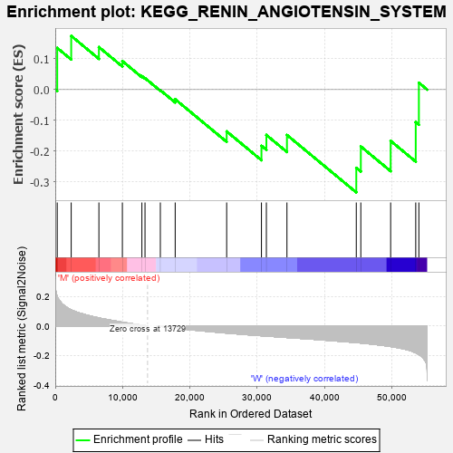
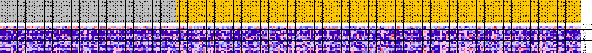
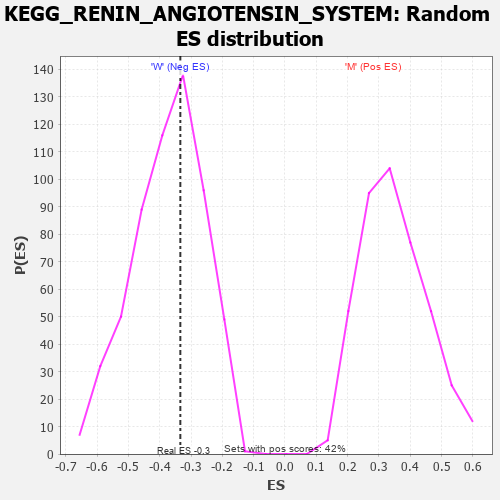

| Dataset | MUC16.MUC16.cls#M_versus_W.MUC16.cls#M_versus_W_repos |
| Phenotype | MUC16.cls#M_versus_W_repos |
| Upregulated in class | W |
| GeneSet | KEGG_RENIN_ANGIOTENSIN_SYSTEM |
| Enrichment Score (ES) | -0.33403823 |
| Normalized Enrichment Score (NES) | -0.8964955 |
| Nominal p-value | 0.56747407 |
| FDR q-value | 1.0 |
| FWER p-Value | 0.999 |

| PROBE | DESCRIPTION (from dataset) | GENE SYMBOL | GENE_TITLE | RANK IN GENE LIST | RANK METRIC SCORE | RUNNING ES | CORE ENRICHMENT | |
|---|---|---|---|---|---|---|---|---|
| 1 | THOP1 | na | 292 | 0.198 | 0.1352 | No | ||
| 2 | NLN | na | 2368 | 0.108 | 0.1743 | No | ||
| 3 | AGT | na | 6485 | 0.054 | 0.1379 | No | ||
| 4 | CTSG | na | 9974 | 0.025 | 0.0925 | No | ||
| 5 | AGTR2 | na | 12875 | 0.005 | 0.0437 | No | ||
| 6 | ANPEP | na | 13337 | 0.002 | 0.0371 | No | ||
| 7 | ACE | na | 15616 | -0.003 | -0.0020 | No | ||
| 8 | ACE2 | na | 17822 | -0.015 | -0.0315 | No | ||
| 9 | MME | na | 25473 | -0.048 | -0.1360 | No | ||
| 10 | REN | na | 30641 | -0.066 | -0.1827 | No | ||
| 11 | ENPEP | na | 31373 | -0.068 | -0.1475 | No | ||
| 12 | CTSA | na | 34430 | -0.078 | -0.1475 | No | ||
| 13 | MAS1 | na | 44735 | -0.112 | -0.2543 | Yes | ||
| 14 | CMA1 | na | 45408 | -0.115 | -0.1848 | Yes | ||
| 15 | LNPEP | na | 49843 | -0.139 | -0.1667 | Yes | ||
| 16 | CPA3 | na | 53569 | -0.181 | -0.1059 | Yes | ||
| 17 | AGTR1 | na | 54037 | -0.193 | 0.0223 | Yes |

